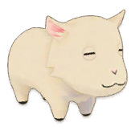

Ganado


En este edificio no solo podras criar vacas, ovejas y alpacas, tambien podras criar y cuidadar variantes de esos animales pero no tendras acceso a esos animales al comienzo, tendras que desbloquearlos cumpliendo ciertos requisitos.

Vaca Normal 5.000 G
Vaca Marrón 10.000 G

Vaca Negra 10.000 G

Búfala 10.000 G
Ovejas 4.000 G

Alpacas 4.000 G

Conejo 2.000 G

Conejo Gris 3.000 G
Conejo Rosa 30.000 G
A diferencia de mejorar el edificio, aqui se tiene que contruir la vercion mejorada y este constara como otro edificio independiente, con esto tendra dos granero y podra albergar mas animales. El granero normal solo tiene espacio para tener hasta 5 animales y el granero grande tiene espacio para tener hasta 10 animales.
Una vaca, una oveja o una alpaca no pueden enfermarse ni morir de vejez.
Produccion
Si las vacas, ovejas y alpacas son cuidados de forma excelento estaran contentos y saludables, esto afectara a sus productos y enves de dar un producto normal pondra un "+".
| Leche | ||
|---|---|---|
| Animales | Produce | |
|
Vaca Vaca Marrón Vaca Negra |
 Leche  Leche + |
|
|

Cabra  Cabra alpina |
 Leche de cabra  Leche de cabra + |
|
Búfala |
Leche de búfala Leche de búfala + |
|
| Lana | |||
|---|---|---|---|
| Animales | Produce | ||
Oveja |
 Lana de oveja  Lana de oveja + |
||
 Oveja Suffolk |
 Lana de oveja suffolk  Lana de oveja suffolk + |
||
Alpaca |
 Lana de alpaca  Lana de alpaca + |
||
 Alpaca Marrón |
 Lana de alpaca marrón  Lana de alpaca marrón + |
||
Conejo |
 Pelo de conejo  Pelo de conejo + |
||
Conejo Gris |
 Pelo de conejo gris  Pelo de conejo gris + |
||
Conejo Rosa |
 Pelo de conejo rosa  Pelo de conejo rosa + |
||